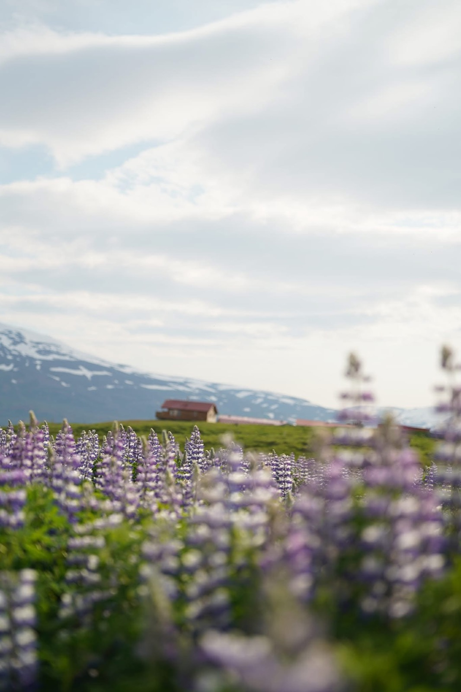

What drives my development
Hockey taught me to compete with discipline. Iceland expanded my perspective through service, communication, and resilience. Accounting and analytics help me turn improvement into something measurable.
Hockey
My hockey background shaped my comfort with pressure, repetition, teamwork, and making decisions quickly.
Iceland
Living in Iceland strengthened communication, adaptability, and appreciation for disciplined effort over time.
Analytics
Tools like Excel and Tableau let me organize information, spot trends, and support decisions with structure.
My development path
- Hockey
- edge work
- quick decisions
- confidence under pressure
- Iceland
- communication
- resilience
- language learning
- Accounting and analytics
- Excel
- Tableau
- financial analysis
These experiences work together. They combine execution, perspective, and analysis into a mindset focused on continuous improvement.

Iceland taught patience, perspective, and steady growth.
Featured Video
This YouTube preview links to the exact hockey video you selected. The uploader appears to block full in-page embedding, so this preview opens it directly on YouTube.
 Watch on YouTube
Watch on YouTube
Hockey and team culture
Hockey has shaped how I think about preparation, accountability, and showing up well for the people around me. That mindset carries into school, work, and leadership.


Two illustrative hockey action images that reflect teamwork, energy, and competitive growth.
NHL Tableau Dashboard
This interactive Tableau visualization adds a data-driven hockey element to the page and supports the site’s analytics focus.